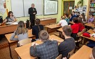
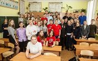
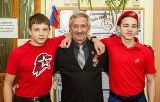

   18 декабря состоялась встреча с прославленным советско-российским альпинистом, Заслуженным мастером спорта СССР и мастером спорта
международного класса, учеником школы №3 Каратаевым Владимиром Александровичем
Владимир Александрович родился в Староконстантинове Хмельницкой области
в 1955 году. Часть жизни прожил в Енисейске. 1 сентября 1962 года пошел в 1
класс нашей школы и обучался здесь 3 класса.
В настоящее время живет в Дивногорске
(Красноярский край). Много лет проработал тренером-преподавателем по горным
лыжам в Спортивной детско-юношеской школе в г. ДивногорскеКрасноярского края (до 1995). Был
ее директором.
Начиная с детских лет, занимался горными лыжами и скалолазанием на Красноярских столбах, при этом всегда предпочитал свободное лазание. Много занимался
лыжной акробатикой, спелеологией, закончил школу водолазов
ДОСААФ и участвовал в спелеоподводных экспедициях, совершил
много длительных подводных заплывов, глубоководных погружений. Владимир
Александрович рассказал ученикам школы о своей судьбе, о трудностях жизни по
достижению своей цели: «Если у тебя есть мечта, нужно не сломя голову к ней
стремиться, а всё подумать, взвесить свои возможности, свой потенциал,
продуманно, серьёзно готовиться; постоянно стремиться вперёд и добиваться своей
цели». В горы впервые попал в 1975 году – в альплагерь «Ала-Арча»
(Тянь-Шань).
В 1985 г. за участие в грандиозном по сложности
штурме Памирского пика «Холодная стена» ему было присвоено звание «Чемпион СССР
в высотно-техническом классе восхождений».
В 1989 году в составе альпинистской сборной
страны принял участие в гималайской экспедиции, во время которой покорил
вершину Канченджангу. После этого восхождения ему была вручена медаль «За
доблестный труд» и присвоено звание «Заслуженный мастер спорта СССР».
В
1990-ом году сильнейший в стране альпинист В.Каратаев вошел в состав уникальной
экспедиции, целью которой был подъем на Лхоцзе (8511 м) по Южной стене,
названной из-за сложности «Маршрутом XXI века». Альпинисты многих стран
безуспешно пытались пройти эту стену. За полтора месяца команда в тяжелейших
условиях проложила по Южной стене маршрут протяженностью четыре километра. Все
участники экспедиции мечтали взойти на вершину, но только Сергею Бершову и
Владимиру Каратаеву это удалось.
Они её достигли, но какой ценой! Резкое
похолодание, сильный ветер, сыпучий снег, не позволявший ставить надежную
страховку, сделали восхождение предельно сложным. Находясь в состоянии эйфории,
Владимир Каратаев не замечал мороза, сковавшего пальцы рук и ног. Лишь на
вершине обнаружил, что они потеряли чувствительность, но даже тогда не придал
этому значения. Осознание всего драматизма ситуации пришло на спуске, когда
Каратаев понял, что организм, всегда служивший ему верой и правдой, на этот раз
отказывается слушаться. Как мог, его поддерживал Сергей Бершов, потом на помощь
пришли Михаил Туркевич и Геннадий Копейка, по следам первой «двойки»
поднимавшиеся к вершине. Эти альпинисты спасли друга, помогая ему бороться за
жизнь. В. Каратаев перенес 10 операций.
Восхождение
Каратаева – Бершова по праву стало наивысшим спортивным достижением мирового
альпинизма – кроме них, подъем по Южной стене пика Лхоцзе так больше никто и не
прошел. За этот подвиг Владимир Александрович был удостоен высшей
государственной награды Советского Союза – ордена Ленина. По итогам 1990 года
он вошел в «десятку» лучших спортсменов СССР, а в 1991-ом стал победителем
конкурса Олимпийского комитета России «Спортивная Честь».
Несмотря на полученную инвалидность, руководил
альпинистскими сборами спасательных отрядов на Кавказе. Освоил полеты на
парапланах.
В
1997 году совершил восхождение на Ама-Даблам (6856 м) в Гималаях.
Начиная
с 1997 года, В.Каратаев руководил СДЮШОР по горным лыжам им. В.И. Махова в
Дивногорске. В те тяжелые времена все едва сводили концы с концами, но
Каратаев, не привыкший сдаваться на милость трудностям, умудрялся не только
поддерживать учебный процесс, но и работать на перспективу. Именно в его
бытность в школе появился восстановительный центр со штатным массажистом,
тренажерным залом, баней, первой в городе кедровой бочкой… Владимир
Александрович смотрел гораздо шире на воспитание юных спортсменов, считая, что
мало поставить их на лыжи — ребятам необходимо гармоничное развитие, чтобы они
были настоящими атлетами, готовыми к любым испытаниям. При нем на слаломной
горе практически каждые выходные проходили соревнования по горным лыжам и
сноуборду, в том числе всероссийского уровня. А ремонт хозяйства СДЮШОР вообще
не прекращался, хотя денег выделялось мало. К известному альпинисту в
Дивногорске относились с уважением, поэтому руководители предприятий шли ему
навстречу, помогая техникой, стройматериалами, специалистами.
Сегодня
Владимир Каратаев продолжает совершать головокружительные полеты на параплане
со скал и горных вершин. На День города Дивногорска в 2005 году Владимир
Александрович поднялся в воздух с 16-метровым флагом России, на что способен не
каждый здоровый парапланерист. Хотел нечто подобное повторить, когда наш город
принимал эстафету Олимпийского огня. Только организаторы остановили его. Позже
В.А. Каратаев принял участие в эстафете Паралимпийского огня в качестве
факелоносца в г. Красноярске. И в честь прекрасного выступления наших
спортсменов на Паралимпийских играх в Сочи пролетел через Енисей на параплане. |